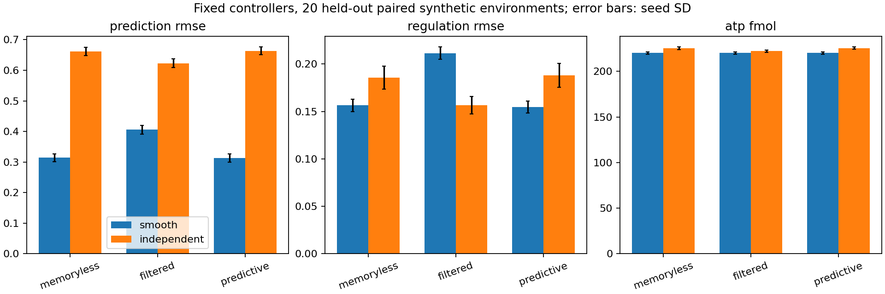

A first experiment from Michael Emanuel Glover’s framework: stochastic receptors, a changing molecular environment, a delayed transporter, and three different ways to predict.
External concentration → receptor binding → current readout or memory → forecast + internal feedback → delayed uptake → internal amount
This is a synthetic, well-mixed experiment. Spatial Brownian trajectories, electrostatics, crowding and molecularly implemented memory remain separate next mechanisms.

On 20 held-out runs per regime, prediction slightly improves smooth-environment regulation but consumes slightly more transport ATP. Simple filtering worsens that control by adding lag. In the independent environment, filtering helps while trend extrapolation performs slightly worse.
Memory has a mechanism, a timescale, and a cost to investigate. Better forecasting does not automatically establish better regulation, lower total energy use, or readiness to rest.
prediction::Observer observer(prediction::Memory::Predictive); prediction::Compartment compartment; const double forecast = observer.forecast(sensed_concentration); const auto ledger = compartment.advance(influx_fmol_per_s, .1);
The C++ values own their state. The Python experiment supplies stochastic receptor endpoint transitions and paired trajectories. Independent implementations agree numerically. Material balance and transport ATP are recorded separately from prediction error.
Equations, units, results and scientific notes · Experiment code · Frozen numerical protocol · All runs · Held-out summary · PDF figure · Source download